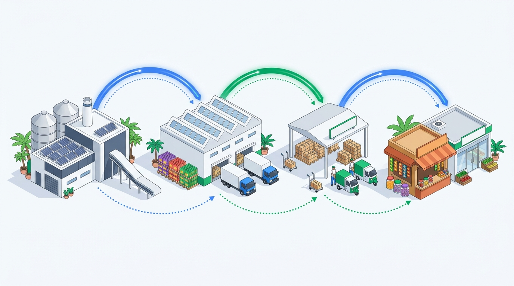

Slide 01 · The Story & Upfront Holistic Blueprint
One Unified TM&D Spine—Not Piecemeal Bots
Connect Plants, CFAs & 7M+ Kiranas onto one Google Cloud intelligence spine without replacing SAP or DMS.
Physical Supply Chain Flow
~7M+ Outlets · India Scale
01 · PlantICML Production
02 · State CFAQ-Comm Proxy
03 · WholesaleWD Distribution
04 · RetailKirana + MT
Holistic 4-Layer Architecture
Zero Rip & Replace
4 · Users & Partners
CEO · Dispatch · CFAs · WDs · DSRs
3 · Autonomous Agent Layer
Sense → Reason → Act
2 · Knowledge & Maps Spine
BigQuery + Maps + Search
1 · Core Systems Preserved
SAP · DMS · SFA · WMS · TMS